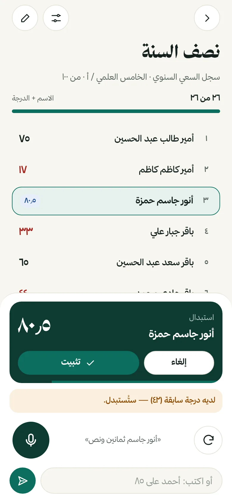
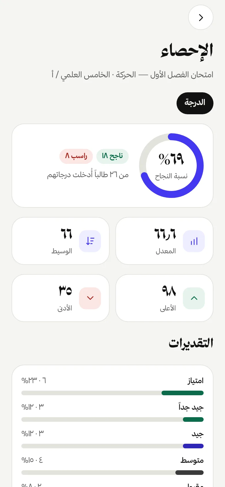

سجل يحسب وحده
قوالب «السعي السنوي»، «السعي + النهائي»، «ابتدائي من ١٠»، «شهري»، «تحريري + شفهي»… أو صمّم أعمدتك بمعادلات سهلة: معدل، مجموع، مرجّح، تحويل، أو معادلة حرة مع معاينة فورية.
صفوفك وطلابك، سجلات الدرجات بالقوالب العراقية والسعي السنوي المحسوب تلقائياً، الحضور بضغطة، جدول حصصك مع التذكير، ودفتر التحضير — ثم اطبع بترويسة رسمية أو صدّر Excel. كل ذلك في تطبيق واحد منظّم، يعمل بلا إنترنت.
قوالب «السعي السنوي»، «السعي + النهائي»، «ابتدائي من ١٠»، «شهري»، «تحريري + شفهي»… أو صمّم أعمدتك بمعادلات سهلة: معدل، مجموع، مرجّح، تحويل، أو معادلة حرة مع معاينة فورية.
نسبة النجاح، المعدل، الأعلى والأدنى، توزيع التقديرات من امتياز إلى ضعيف، الأوائل، ومن يحتاج متابعة.
صدّر السجل Excel من اليمين لليسار، أو اطبعه PDF بترويسة «وزارة التربية» واسم المدرسة والمادة والتوقيعات وإحصاء النتائج.
اضغط على الغائب فقط والباقون حاضرون. متأخر ومُجاز، وعدد غيابات كل طالب، وتصدير سجل الحضور الشهري.
أوقات الدوام مرة واحدة، ثم ضع شعبك في الجدول. الرئيسية تعرض حصتك الحالية والقادمة، وإشعار قبل كل حصة.
دفتر التحضير على هاتفك: الأهداف السلوكية، الوسائل، طرائق التدريس، الخطوات، التقويم والواجب — وطباعته.
اختيار طالب عشوائي بلا تكرار، تقسيم الشعبة لمجموعات، ومؤقت للأنشطة والاختبارات القصيرة.
رسالة واتساب جاهزة بدرجات الطالب وغياباته بضغطة واحدة، وتقرير الطالب PDF.
كل شيء يُحفظ على هاتفك فوراً بلا إنترنت. سجّل الدخول لنسخة سحابية تلقائية تنقلها لأي هاتف، أو خذ نسخة احتياطية في ملف.
أوامر: «نعم» · «لا» · «تراجع» · «التالي» · «السابق» · «غائب» · «توقف». وفي وضع «بالترتيب» تقول الدرجات فقط.





التحديثات تظهر داخل التطبيق تلقائياً، وتُثبّت فوق القديمة دون أن تفقد بياناتك.
نعم، مجاني بالكامل.
نعم. كل البيانات على هاتفك. الإنترنت يُستخدم فقط للنسخة السحابية (اختيارية) وللتعرّف على الكلام في بعض الهواتف.
نعم: «سبعطعش»، «ثمنطعش»، «مية»، «تسعين ونص»، «غايب»… ويتسامح مع أخطاء التعرّف في الأسماء ويسألك عند تشابهها.
معدل (معدل الفصل الأول + نصف السنة + معدل الفصل الثاني) مقرّباً لأقرب عدد صحيح، والنجاح ٥٠. ويمكنك تعديل أي معادلة أو حد نجاح.
أنت فقط. البيانات محفوظة على هاتفك، وإن سجّلت الدخول تُحفظ في حسابك محمية بحيث لا يصل إليها غيرك. سياسة الخصوصية.
نعم، على ويندوز ١٠ و١١ (لابتوب أو حاسوب مكتبي)، بنفس الواجهة والمزايا ومنها الطباعة والإدخال الصوتي. سجّل الدخول بنفس الحساب لتتزامن بياناتك مع هاتفك.
النسخة الحالية لأندرويد وويندوز. نسخة آيفون مخطط لها.